Good Neighbors — Master Brand Guide Website
Good Neighbors
글로벌 아동권리 NGO 굿네이버스의 마스터 브랜드 가이드를, 문서에서 웹으로. 직원 · 협력업체 · 해외 지부 누구나 필요한 규칙을 찾아 바로 적용할 수 있도록 정보 구조와 규칙의 시각 언어를 설계했습니다.
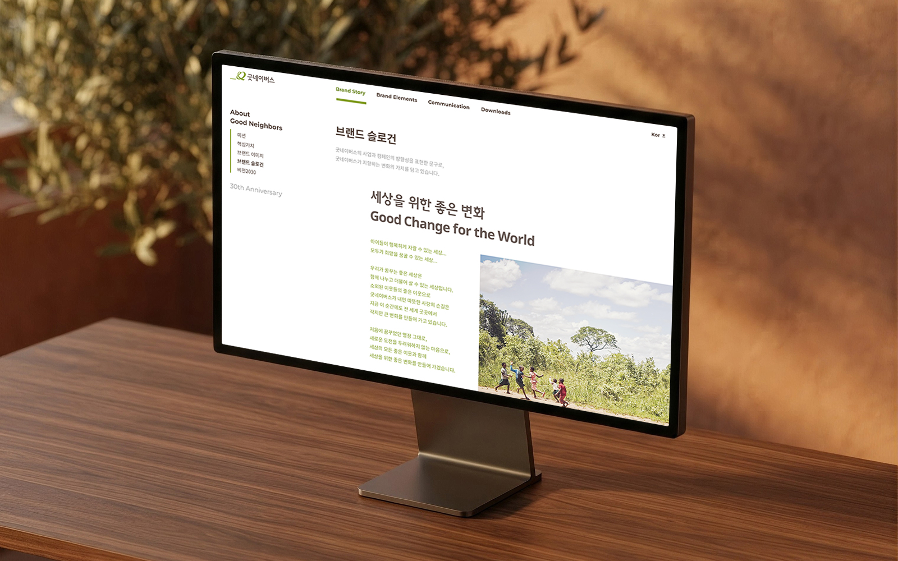
01 — Overview
가이드는 끝까지 읽는 문서가 아니라, 필요한 순간에 펼쳐 보는 도구여야 했습니다.
Context
굿네이버스는 1991년 한국에서 시작해 전 세계에서 활동하는 아동권리 전문 NGO입니다. 미션 · 핵심가치 · CI · 슬로건 · 컬러 · 사진 원칙까지 브랜드의 모든 기준을 정리한 마스터 브랜드 가이드가 있었지만, 문서 형태로는 필요한 규칙 하나를 찾기 위해 수십 페이지를 넘겨야 했습니다. 브랜드를 쓰는 사람은 디자이너만이 아니라 현장 직원, 협력업체, 해외 지부까지 다양했습니다.
My Part
4명 디자인팀의 아트디렉터로서 가이드 웹사이트의 정보 구조와 비주얼 방향을 정하고, 메인과 Brand Elements · Communication 주요 페이지를 직접 디자인했습니다. 규칙을 ‘설명’이 아닌 ‘보여 주기’로 바꾸는 Do / Don’t 시각 체계를 세우고, 1680부터 360까지 5단계 반응형과 국 · 영문 두 언어를 하나의 그리드로 정리했습니다.
Information Architecture
4 GNB / 16 Pages / Desktop 1680 · Mobile 360
- GNB 01
Brand Story
- About Good Neighbors
- 30th Anniversary
- GNB 02
Brand Elements
- CI
- Master Brand CI
- Group Brand CI
- Office Brand CI
- Slogan
- Typography
- Color
- GNB 03
Communication
- CI Application
- Photo
- Copyright
- Interview
- Videos
- Ceremony
- GNB 04
Downloads
- Brand CI Download
- Brand Guide Download
가장 자주 찾는 규칙 영역배경 · 원본 파일
02 — Problem → Answer
기준은 있었다.
쓰이지 않았을 뿐.
브랜드가 흔들리는 이유는 규칙이 없어서가 아니라, 규칙에 닿기까지가 멀고 읽어도 헷갈리기 때문이었습니다. 그래서 ‘무엇을 담을까’보다 ‘어떻게 찾고, 어떻게 틀리지 않게 할까’를 먼저 정의했습니다.
-
01 · Findability필요한 규칙 하나를 찾기 위해 문서 전체를 넘겨야 한다
4개의 문, 16개의 방. 가이드를 Brand Story · Brand Elements · Communication · Downloads 네 개의 GNB로 나누고, 모든 하위 페이지를 같은 위치의 3depth LNB로 연결했습니다. 어느 페이지에 있든 지금 위치와 옆 규칙이 한눈에 보입니다.
-
02 · Misuse글로 읽은 규칙은 해석이 갈리고, 결국 잘못 쓰인다
설명 대신, 틀린 예시를 보여 준다. 초록 ✓ · 빨강 ✕ 라벨을 하나의 컴포넌트로 만들어 CI · 슬로건 · 배경 · 사진 규칙 전체에 같은 문법으로 적용했습니다. 실제 오용 사례를 이미지로 나란히 두어, 읽기 전에 먼저 보이게 했습니다.
-
03 · Access브랜드를 쓰는 사람과 환경이 제각각이다
어디서든, 바로 가져다 쓰게. 1680 · 1280 · 1024 · 768 · 360 다섯 단계 반응형과 국 · 영문 전환을 기본으로 두고, 컬러칩은 클릭 한 번에 코드가 복사되게, CI와 가이드 원본은 각 페이지에서 바로 내려받게 했습니다.
03 — Navigation
4개의 문,
16개의 방.
가이드의 목차를 그대로 메뉴로 옮기지 않았습니다. 사용 빈도가 가장 높은 Brand Elements와 Communication을 중심에 두고, 브랜드의 배경(Brand Story)과 원본 파일(Downloads)을 양 끝에 배치해 ‘이해 → 규칙 → 적용 → 다운로드’의 순서로 흐르게 했습니다.
- GNB
현재 영역은 굵은 초록 밑줄로.네 개의 영문 메뉴는 Montserrat로 통일하고, 활성 메뉴만 GN Green 밑줄로 표시해 위치를 잃지 않게 했습니다.
- LNB
옆 규칙까지 함께 보이는 3depth.왼쪽 고정 LNB에 같은 영역의 모든 페이지를 펼쳐 두고, 현재 페이지의 하위 목차만 초록 세로선으로 열었습니다.
- NEXT
끝에서 다음 규칙으로.모든 페이지 하단에 다음 섹션으로 넘어가는 민트 배너를 두어, 처음 보는 사람도 가이드를 순서대로 훑을 수 있게 했습니다.
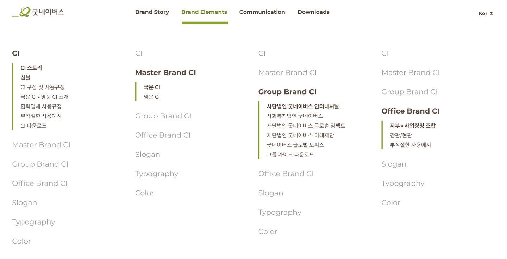
04 — Main Page
목차가 아니라,
브랜드의 첫인상.
가이드 사이트의 메인은 흔히 메뉴판이 됩니다. 저는 메인 자체가 브랜드 가이드의 ‘첫 번째 적용 사례’가 되길 바랐습니다. 아이들의 사진과 미션 문장으로 시작해, 네 개의 GNB를 각각 하나의 장면으로 펼치고, 마지막엔 원본 다운로드로 끝나는 한 장의 흐름으로 구성했습니다.
- 01Hero미션 한 문장
- 02Brand Story함께 걷는 사람들
- 03Brand ElementsCI · Slogan · Color 미리보기
- 04Communication사진 톤 그리드
- 05Downloads가이드 · CI 3종
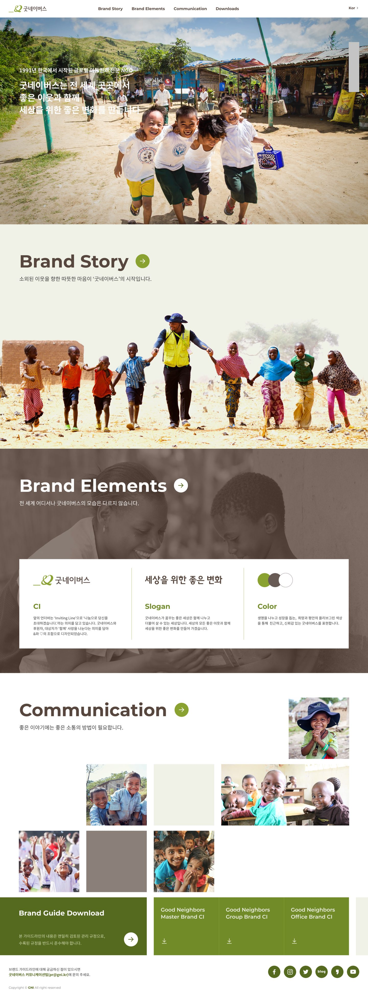
05 — Show, Don’t Tell
맞는 예보다
틀린 예를 먼저.
“심볼과 로고의 비율을 임의로 변경하지 않는다”는 문장은 모두가 이해하지만, 모두가 지키지는 않습니다. 그래서 규칙 페이지마다 구조도(Symbol · Logo · Clear Space)로 기준을 먼저 보여 주고, 바로 아래에 실제로 자주 일어나는 오용을 빨간 ✕ 라벨과 함께 나란히 배치했습니다.
- A
오용 예시는 전체 변형 · 슬로건 조합 변형 · 배경 규정 세 묶음으로 분류하고, 묶음마다 캐러셀로 넘겨 보게 해 페이지 길이를 억제
- B
✓ · ✕ 라벨은 PC 40px / Mobile 24px 두 사이즈의 단일 컴포넌트로 만들어 CI부터 사진 원칙까지 같은 문법으로
- C
치수 표기(A, 0.75A, 2.5mm)는 본문과 다른 시안 컬러로 분리해, 장식이 아닌 ‘측정 정보’로 읽히게
- D
가로 · 세로 조합처럼 버전이 갈리는 규칙은 하단 토글로 한 프레임 안에서 전환
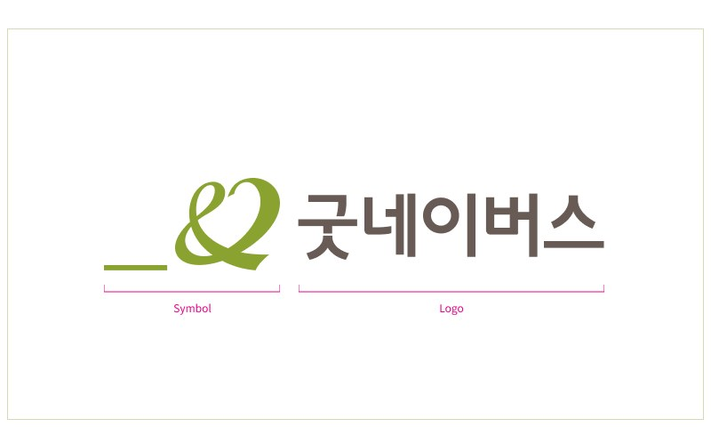
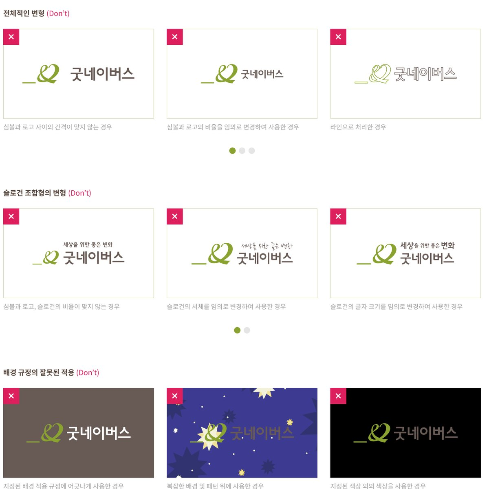
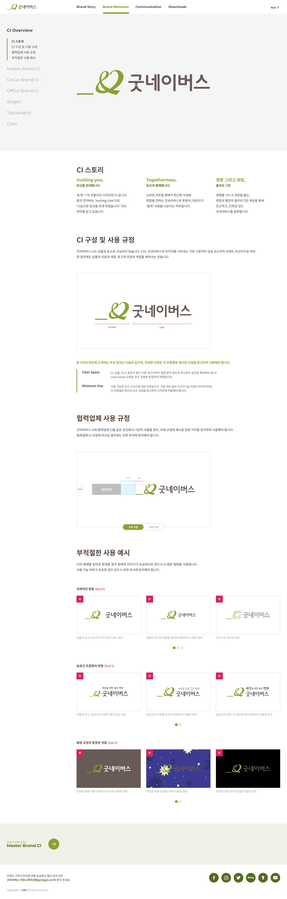
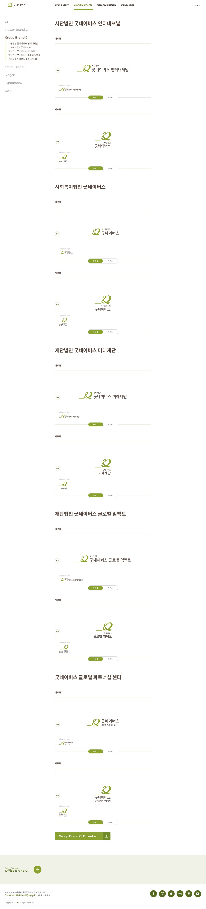
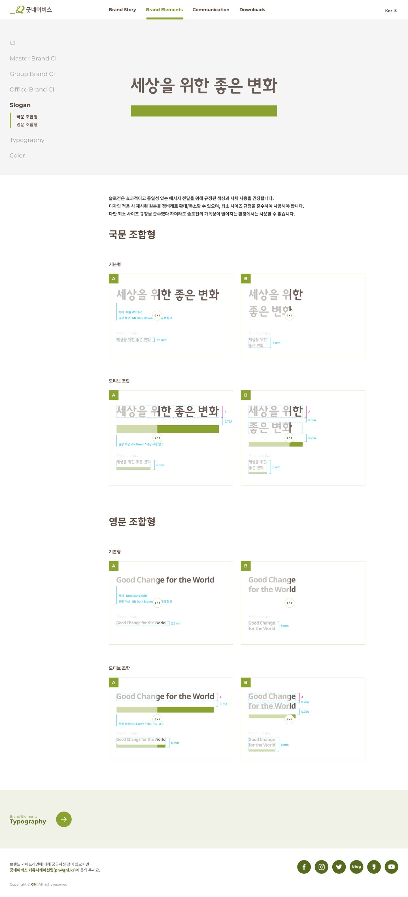
06 — Color · Typography
보는 순간,
가져다 쓰게.
컬러 페이지의 목적은 ‘감상’이 아니라 ‘정확한 값의 전달’입니다. 메인 · 모노 스펙트럼 · 서브 컬러를 위계별 카드로 나누고, 각 카드에 Pantone · CMYK · HEX를 함께 표기한 뒤 클릭 한 번에 코드가 복사되게 했습니다. 아래 칩은 실제 가이드의 값과 동작을 그대로 옮긴 것입니다. 눌러 보세요.
Main Color
- Pantone
- 377 C
- CMYK
- 42/10/100/17
- HEX
- #89A230
- Pantone
- Warm Gray 11 C
- CMYK
- 0/15/17/72
- HEX
- #685A55
Main Color Mono Spectrum — 메인 컬러 보조 · 같은 계열 확장
Sub Color — 콘텐츠 강조 · 인쇄물의 표지 · 전면 사용 금지
메인 2색은 큰 카드로, 모노 스펙트럼 8색은 아코디언으로 접어 위계를 나눴습니다. 서브 컬러는 ‘바탕에 쓰지 않는다’는 제한을 카드 설명에 함께 붙여, 값과 사용 조건이 분리되지 않게 했습니다.
Typography — 국문 지정 서체Noto Sans KR
굿네이버스의 국문 지정 서체입니다.
굿네이버스의 국문 지정 서체입니다.
굿네이버스의 국문 지정 서체입니다.
굿네이버스의 국문 지정 서체입니다.
비영리 목적 무료
GNB · 섹션 타이틀
07 — Photo Principles
동정이 아니라,
존엄과 가능성으로.
아동권리 NGO에게 사진은 가장 강력하면서 가장 위험한 브랜드 요소입니다. ‘불쌍해 보이는 아이’는 모금에는 효과적일 수 있지만, 아동의 존엄을 해칩니다. 굿네이버스 아동보호정책을 근거로 아동 · 지역사회 두 영역의 Must / Don’t를 숫자 목록으로 대칭 배치(아동 7 · 7, 지역사회 6 · 6)해, 사진을 고르는 사람이 판단 기준을 그대로 체크리스트로 쓰게 했습니다.
아동 권리 보호 Child Rights
✓Must
- 밝은 희망이 보이는 아동
- 옷을 갖춰 입은 아동
- 자연스럽고 꾸밈없는 아동
- 밝은 표정을 짓고 있는 아동
- 웃고 있는 표정의 아동
- 성적으로 오해가 없는 사진
- 역동적인 에너지가 느껴지는 사진
✕Don’t
- 불쌍해 보이는 아동
- 나체 / 반나체의 아동
- 페이스페인팅을 과하게 한 아동
- 억지 표정을 짓고 있는 아동
- 울고 있는 표정의 아동
- 성적인 자극을 줄 수 있는 사진
- 무기력함이 느껴지는 사진
지역사회 존중 Community
✓Must
- 자립적인 주민의 모습
- 능동적인 주민의 모습
- 희망찬 풍경
- 역동적인 지역사회
- 협동적인 지역사회
- 지속가능한 개발
✕Don’t
- 의존적인 주민의 모습
- 수동적인 주민의 모습
- 황폐한 풍경
- 정체된 지역사회
- 경쟁적인 지역사회
- 무분별한 개발
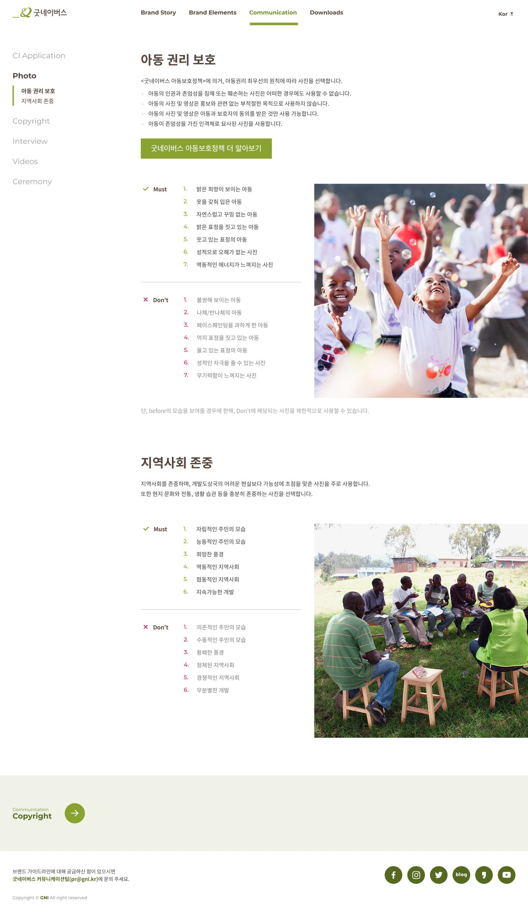
08 — CI Application
규칙이 실제가 되는
장면까지.
CI의 언더바 ‘Inviting Line’은 ‘나눔으로 당신을 초대합니다’라는 의미를 가집니다. 이 선을 그대로 늘려 쓰는 모티브 확장 규칙과 사업 아이콘을 정리하고, 명함 · 사원증 · 머그 · 배지 · 택배 박스 · 조끼까지 실제 아이템에 적용된 모습으로 페이지를 마무리해, 규칙이 어디에 쓰이는지 상상하지 않아도 되게 했습니다.
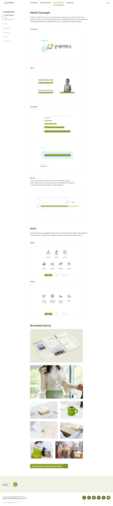
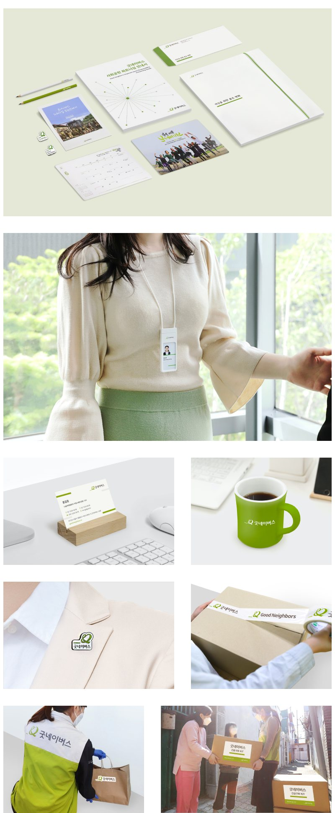
Brand Image — 브랜드 이미지 아이콘
Brand Story의 여섯 가지 브랜드 이미지(선도적인 · 전문적인 · 믿을 수 있는 · 투명한 · 친근한 · 글로벌한)도 같은 라인 굵기와 GN Green 포인트의 아이콘 세트로 그려, 추상적인 가치가 사이트 전체의 시각 언어와 이어지게 했습니다.
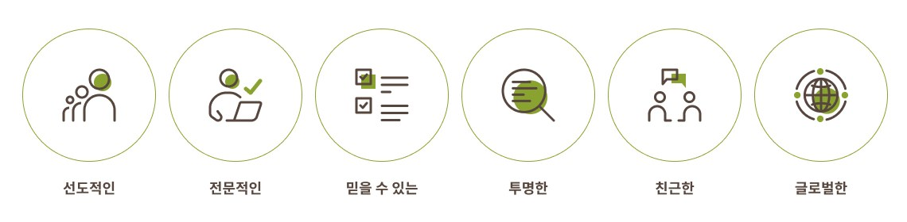
09 — Responsive · Bilingual
현장에서 꺼내 보는
가이드.
가이드가 가장 필요한 순간은 인쇄소 앞, 행사장, 해외 사업장처럼 책상 밖인 경우가 많습니다. 1680부터 360까지 다섯 단계 브레이크포인트를 설계하고, 모바일에서는 LNB를 페이지 타이틀로 접고 Do / Don’t 예시는 가로 스와이프로, 컬러 스펙트럼은 아코디언으로 바꿔 한 손으로 규칙을 확인할 수 있게 했습니다. 국 · 영문은 같은 그리드를 공유해 해외 지부에서도 동일한 경험을 갖습니다.
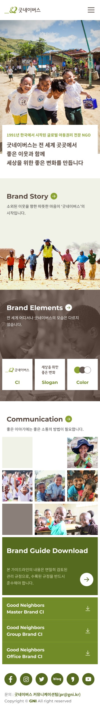
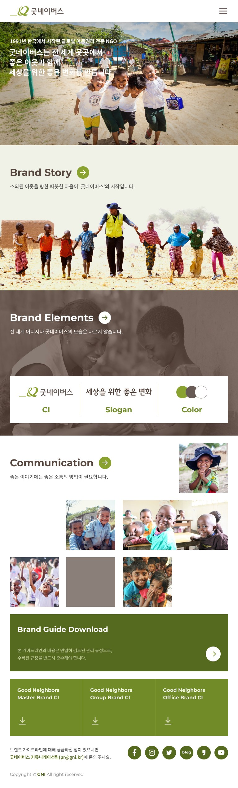
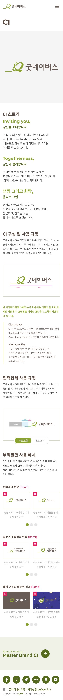
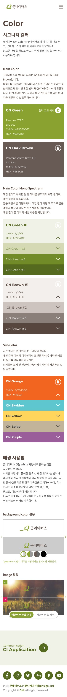
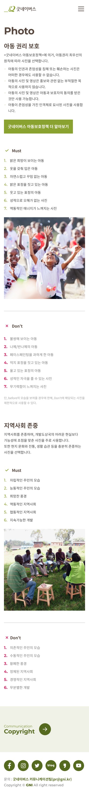
10 — Outcome
-
16pages
One Source of Truth
흩어져 있던 미션 · CI · 슬로건 · 컬러 · 사진 원칙을 4개 GNB, 16개 페이지의 한 사이트로 모았습니다. 직원 전용 원본 가이드와 CI 3종 파일도 같은 곳에서 내려받습니다.
-
5breakpoints
Anywhere, Any Device
1680 · 1280 · 1024 · 768 · 360 다섯 단계 반응형과 국 · 영문 버전으로, 책상 밖 현장과 해외 지부에서도 같은 규칙을 확인할 수 있게 했습니다.
-
15colors
Copy-ready Values
메인 2 · 모노 스펙트럼 8 · 서브 5색을 Pantone · CMYK · HEX와 함께 정리하고 클릭 복사를 붙여, 값을 옮겨 적다 틀리는 일을 없앴습니다.